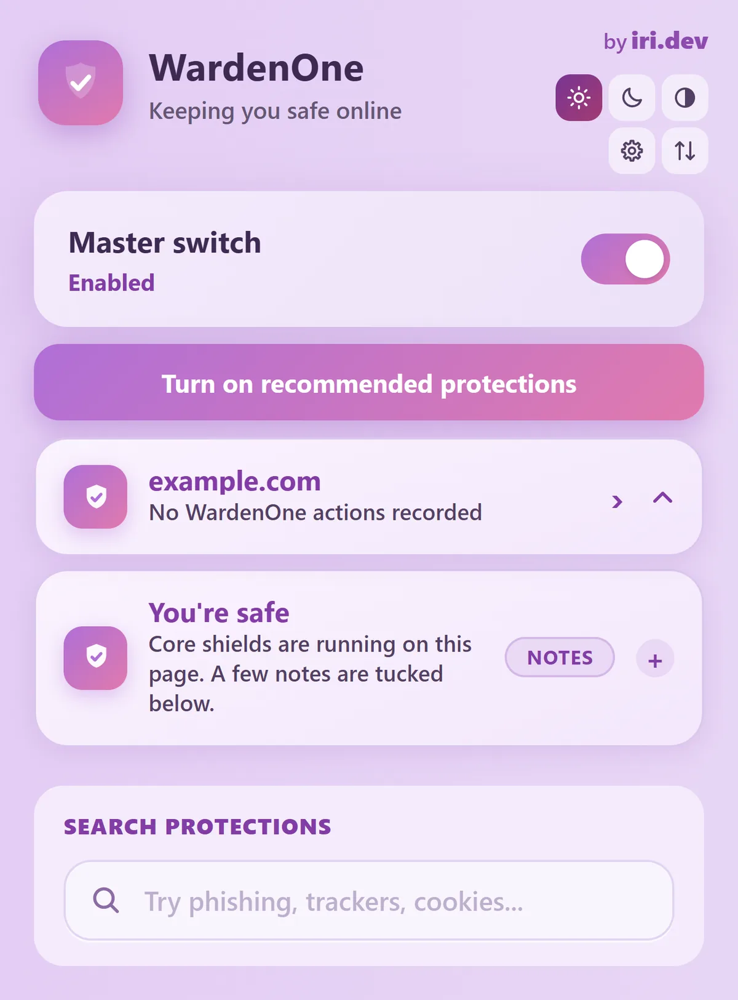

out now ✦
free, always
out now ✦
free, always
WardenOne
One extension. Every defence.
A privacy, security and anti-scam extension for Chrome, Edge, Brave, Opera and other Chromium browsers. It quietly looks after you while you browse, and all of the checking happens on your own device.
- 108 protections
- no account
- no telemetry
- open source · GPLv3
Inside WardenOne
My browser popup and first-run setup. Open either screenshot for a closer look.


Screenshot 1 of 2
The browser popup
My main popup brings the master switch, current-site status, safety notes, and protection search together.

My interface screenshots. I keep the full images available so you can read the details.
What it looks after
Ads & trackers
Blocked before they load, so pages are calmer and nobody follows you from site to site.
Scams & fake sites
Warns you about phishing pages and scam tricks before you hand anything over.
Fake “are you human?” pages
A real check never asks you to paste something into your computer. WardenOne notices when a page does.
Passwords & cards
Watches for card skimmers, sneaky forms and anything swapping what you copied.
Downloads
Looks at files before you open them, and tells you in plain words why something seems risky.
Fingerprinting
Makes your browser much harder to recognise, so sites can't quietly tell it's you again.
Cookie walls
Clears away the pop-ups that block the page until you click “accept all”.
YouTube, Twitch & Spotify
Special care for the sites where you watch and listen, so ads go and the player keeps working.
Staying safe online usually means installing five different tools and somehow understanding all of them. I wanted one thing that does the looking-after quietly, explains itself in normal words, and never asks for anything back.
The hard (and fun) part is making every protection work on real websites without breaking them.
my promises ♡
- No account. Install it and you're done.
- No telemetry. I don't collect what you browse.
- The checking happens on your own device.
- You're in charge: pause a site, or turn any protection off.
- If it breaks a real website, that's my bug to fix.
- Every line of code is open for you to read.
Little questions
Is it really free?
Yes. There's no paid version and nothing locked away. There's a tip jar if you ever feel like it, but WardenOne is exactly the same either way.
Which browsers does it work in?
Chrome, Edge, Brave, Opera and other Chromium-based browsers. It doesn't work in Firefox or Safari, sorry!
How do I install it?
Download the latest build from GitHub. The release page walks you through it: unzip it, turn on developer mode in your browser's extensions page, and load the folder. It takes about a minute.
Is there an app or an .exe?
No, and there never will be. WardenOne is only ever a browser extension, and the only official place to get it is my GitHub. If someone offers you a WardenOne installer, it isn't from me.
Will it break my favourite websites?
It shouldn't, and I treat it as a bug if it does. Video players and logins matter a lot to me. If something does go wrong, you can pause WardenOne on that one site, and please tell me so I can fix it properly.
Found a bug, or have an idea for a protection? Open an issue or say hi. I read every one myself.